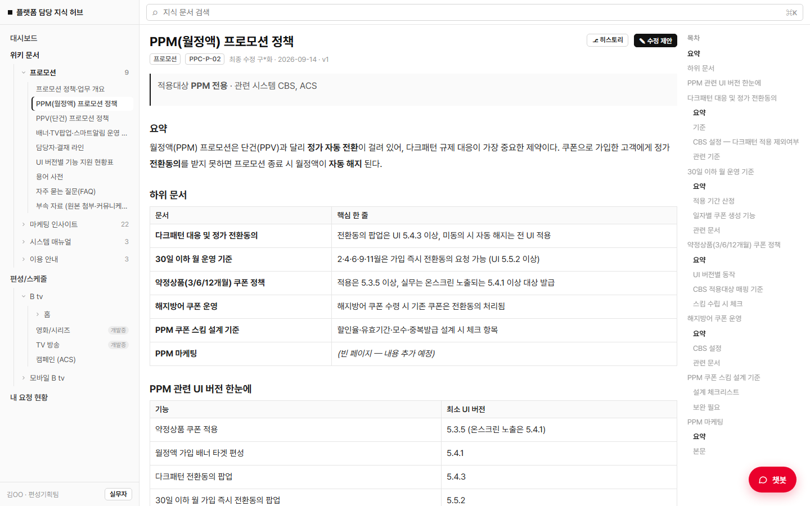
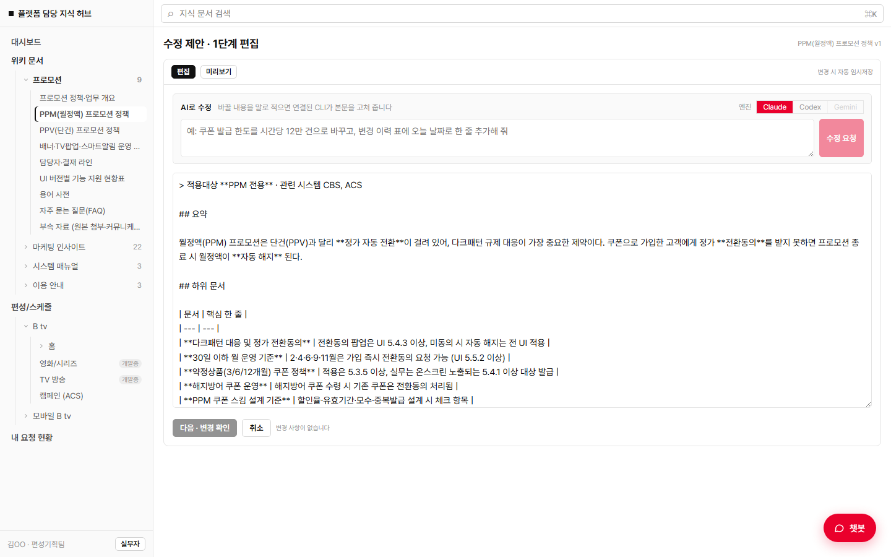
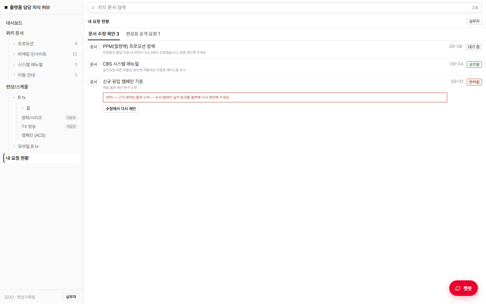
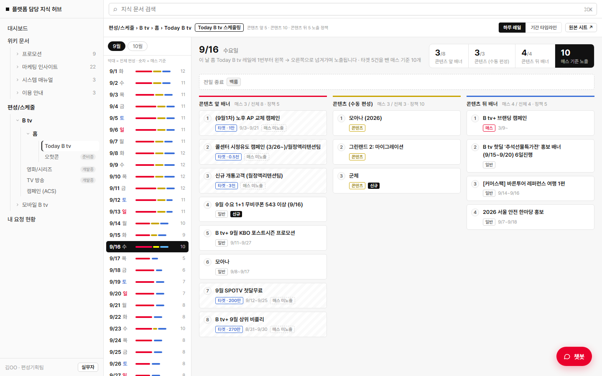
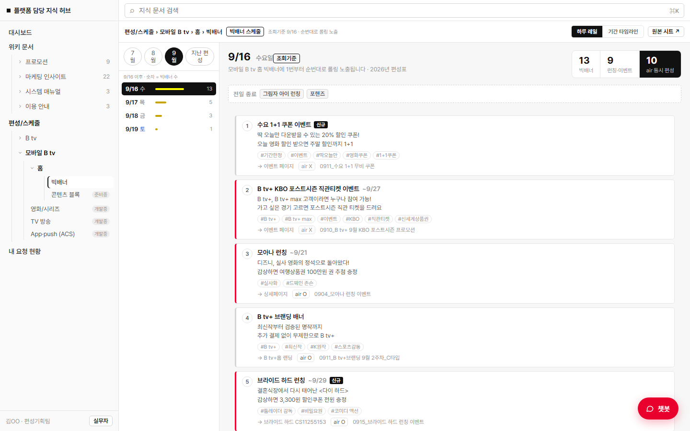
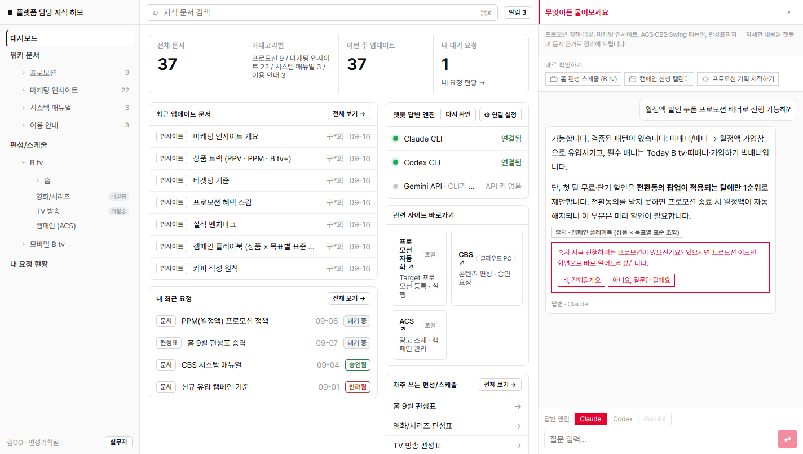
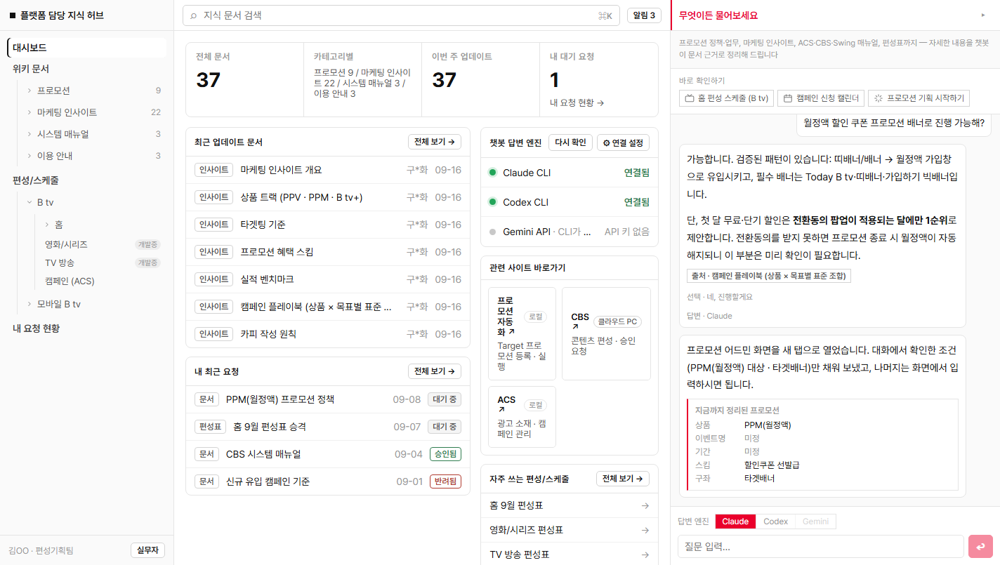

마케팅 자동화를 위한
담당 지식 허브 구축
컨플루언스·구글시트·개인 PC에 흩어져 있던 플랫폼 담당의 편성 정책, 마케팅 인사이트, 시스템 사용법을 하나의 웹앱에서 확인하고, 담당자가 직접 갱신하며, 챗봇으로 바로 찾아 프로모션 실행까지 이어지게 만든 사내 지식 허브
목차
- 과제 배경 — 현황 진단(As-Is) 포함
- 솔루션 내용 · 진행 과정 — 무엇을 만들었나 · AI를 어떻게 활용했나
- 솔루션 결과 — 최종 구현 결과와 동작 화면 · 정량/정성 기대효과
- 최종 코멘트 — Lesson Learned · 향후 계획
01과제 배경 — 이 일은 왜 늘 사람에게 묻게 될까
"이 배너 스펙, 최신 기준이 어디 있더라?"
"작년에 비슷한 프로모션 했었는데 그 문서 누가 갖고 있지?"
"담당자분 휴가라는데… 다음 주에 물어봐야 하나."
플랫폼 담당에서 하루에도 몇 번씩 오가는 말입니다. 기준이 없어서가 아닙니다. 기준은 분명히 있는데 어디에 있는지를 사람이 기억해야 하기 때문입니다.
편성 정책은 컨플루언스에, 마케팅 인사이트는 담당자 PC의 PPT에, 시스템 사용법은 메신저 대화 속 캡처로, 편성 시트는 각자의 구글시트에. 같은 담당 안에서도 팀마다·사람마다 보관 위치와 양식이 달라서, 결국 가장 빠른 방법이 "아는 사람에게 묻는 것"이 되어 버립니다.
문제는 이 구조가 사람에게 묶여 있다는 점입니다. 담당자가 자리에 없으면 업무가 멈추고, 담당이 바뀌면 그동안 쌓인 판단 근거가 함께 사라집니다. 수정 이력이나 승인 절차도 없어, 오래된 버전을 최신인 줄 알고 적용해도 한참 뒤에야 알게 됩니다.
지금 풀어야 하는 이유가 하나 더 있습니다. 담당 내 마케팅 자동화 프로젝트가 상용화 직전 단계입니다. 자동화는 결국 "어떤 기준으로 실행할 것인가"를 참조해야 하는데, 그 기준이 흩어져 있으면 자동화도 그 위에 쌓을 수 없습니다. 자동화가 참조할 정제된 기준 문서 체계를 지금 만들어 두는 것이 이번 과제의 출발점입니다.
현황 진단 (As-Is) — 지금 일하는 방식
| 구분 | 현재 (As-Is) | 남는 문제 |
|---|---|---|
| 지식 문서 | 편성 정책·마케팅 인사이트·시스템 매뉴얼이 컨플루언스·개인 PC·메신저에 분산 | 어디서 봐야 할지를 사람이 기억해야 한다 |
| 편성·마케팅 시트 | 담당자별로 양식이 상이 — 구글시트·PPT·컨플루언스 혼재 | 같은 항목도 이름과 형식이 달라 비교가 어렵다 |
| 공유 경로 | 담당자 간 개별 공유, 인수인계 시 전달에 의존 | 정식 루트가 없어 전달이 누락된다 |
| 정보 찾기 | 아는 사람에게 문의하거나 직접 폴더 탐색 | 담당자 부재 시 업무가 멈춘다 |
| 문서 수정 | 수정 이력·승인 절차 없음 | 구버전이 적용돼도 알 수 없다 |
| 프로모션 실행 | 정책을 확인해 조건을 수기로 정리한 뒤 실행 화면에 입력 | 건건이 반복되고, 기준 오적용 위험이 있다 |
담당 4개 팀이 각자의 방식으로 잘 관리하고 있지만, 담당 전체가 함께 참고할 하나의 기준이 없다는 것이 공통된 지점이었습니다.
02솔루션 내용 · 진행 과정
솔루션 내용 — 무엇을 만들기로 했나
담당 지식 문서를 단일 저장소로 모으고, 챗봇이 그 문서를 근거로 답하며, 정리된 프로모션 조건을 실행 화면까지 넘겨주는 사내 지식 허브 웹앱입니다. 설계할 때 세운 원칙은 세 가지였습니다.
- 1한 곳에서 다 본다. 문서·시트·챗봇을 따로 두지 않고 하나의 웹앱에서 해결한다.
- 2담당자가 직접 갱신한다. 관리자만 고칠 수 있으면 문서는 반드시 낡는다. 최신성을 구조로 보장한다.
- 3찾는 데서 끝나지 않는다. 확인한 기준이 프로모션 실행까지 끊기지 않고 이어지게 한다.
지식 위키
프로모션 정책·마케팅 인사이트·시스템 매뉴얼·이용 안내를 마크다운 트리로 이관해 열람·검색
수정 제안 → 승인
담당자가 직접 수정·추가를 제안하고 관리자 승인 후 반영. 변경 이력이 남는다
편성 시트 모니터링
각자 관리하던 편성표를 B tv · 모바일 B tv 플랫폼 기준으로 묶어 한 화면에서 확인
문서 근거 챗봇
위키 문서만 근거로 답하고 출처 문서를 함께 표시. 문서에 없으면 없다고 답한다
프로모션 핸드오프
대화에서 정리된 조건을 요약 카드로 확인받아 프로모션 실행 화면으로 전달
선택형 AI 연동
Gemini API 또는 로컬 Claude·Codex CLI 중 개인 선호·구독 상황에 맞게 선택
이것만은 반드시 되게 하겠다고 정한 핵심 범위 — 더미 지식 문서를 근거로 챗봇과 대화하며 프로모션 조건을 정리하고, 확정된 조건을 실행 화면으로 넘기는 흐름을 끝까지 한 번 돌아가게 만드는 것. 위키 열람·검색은 이 흐름을 뒷받침할 최소 수준으로 잡았습니다.
진행 과정 — AI를 어떻게 활용했나
1. 범위를 먼저 좁혔다
중간과제 기획서에서 "챗봇 → 프로모션 핸드오프 하나만은 끝까지 돌아가게"로 핵심 범위를 박고 시작했습니다. AI는 범위가 명확할수록 빠르게 도왔습니다.
2. 문서 이관과 앱 구현을 Claude Code로
기존 PPT·매뉴얼을 마크다운 위키트리로 일괄 이관하고, 화면 14개·약 7,800줄의 웹앱을 대화로 구현했습니다. (PR 28건 / 커밋 66개 / 약 1주)
3. 챗봇 품질은 코드가 아니라 규약 문서로
답변 규칙을 별도 프롬프트 문서로 분리했습니다 — 결론부터 5줄 이내, 문서에 없으면 없다고 말하기, 상품 유형(PPM·PPV) 교차 인용 금지.
4. 승인 절차는 만들지 않고 Git을 썼다
제안=브랜치, 비교=PR diff, 승인=리뷰, 반영=머지. main 보호로 AI가 직접 반영하지 못하게 하고 최종 승인은 사람이 합니다.
막혔던 지점과 해결
- !챗봇이 PPV 질문에 PPM 정책을 근거로 끌어왔다. 기능을 고치는 대신 "상품 유형을 섞어 인용하지 마라"는 규칙을 규약 문서에 추가해 해결했습니다.
- !챗봇이 되물은 문장을 사용자가 확정한 조건으로 오인했다. "어시스턴트의 되물음은 사용자의 조건이 아니다"를 명시했습니다.
- !핸드오프 필드 이름이 세 벌로 돌아다녔다. 챗봇 내부 이름·어드민 화면 이름·캠페인 신청 시트 컬럼 중, 이미 운영 중인 시트 컬럼을 정본으로 삼는 매핑 규약 문서를 따로 작성했습니다.
03솔루션 결과
최종 구현 결과 + 동작 화면
기획한 범위를 모두 구현해 실제로 동작하는 웹앱으로 완성했습니다. 아래는 전부 실제 동작 화면 캡처이며, 문서 내용은 동일 구조의 더미 데이터입니다.
3-1한 화면에서 담당 전체의 상태를 본다
대시보드에 문서 현황, 최근 업데이트, 내 요청 상태, 자주 쓰는 편성 시트, 관련 사이트 바로가기를 모았습니다. 여러 사이트를 돌아다니며 확인하던 것을 한 화면에서 끝냅니다.

3-2흩어진 문서를 하나의 위키트리로
컨플루언스와 PPT에 있던 프로모션 정책, 마케팅 인사이트, ACS·CBS·Swing 시스템 매뉴얼, 이용 안내를 마크다운 문서 38건으로 이관해 카테고리 트리로 정리했습니다. 문서마다 문서 코드 · 버전 · 최종 수정일 · 작성자가 붙어 있어, 지금 보고 있는 것이 최신 기준인지 화면에서 바로 판단할 수 있습니다.


3-3담당자가 직접 고친다 — 최신성이 가장 큰 강점
지식 허브의 가치는 문서가 낡지 않는 것에 있습니다. 그래서 관리자만 고칠 수 있는 구조를 만들지 않았습니다. 실무 담당자가 화면에서 바로 수정·추가를 제안하면, 제안 → 관리자 승인 → 위키 반영으로 이어지고 변경 이력이 그대로 남습니다.
이 절차는 새로 개발하지 않고 Git 워크플로우를 그대로 대응시켰습니다. 수정 제안은 브랜치, 비교 화면은 PR diff, 승인·반려는 리뷰, 반영은 머지입니다. 덕분에 "누가·언제·왜 바꿨는지"가 자동으로 기록됩니다.


이 구조 덕분에 담당자가 급히 바뀌어도 인수인계 부담이 크게 줄어듭니다. 개인 PC에 남던 판단 근거가 담당 자산으로 쌓이고, 변경 이력까지 함께 남기 때문입니다.
3-4여러 곳에서 관리되던 편성 시트를 여기서 모니터링
각자의 구글시트로 관리되던 편성표를 B tv · 모바일 B tv 플랫폼 기준으로 묶어 한 화면에서 모니터링합니다. 구좌별 편성 현황과 기간 타임라인을 함께 보여줘 "지금 어디에 무엇이 걸려 있는지"를 시트를 열지 않고 확인할 수 있습니다.


3-5챗봇으로 바로 찾는다 — 출처까지 함께
문서를 다 읽지 않아도 됩니다. 궁금한 것을 물으면 챗봇이 위키 문서만 근거로 답하고, 어느 문서에서 나온 답인지를 함께 표시합니다. 문서에 없는 내용은 지어내지 않고 "문서에 없다"고 답하도록 규칙을 걸었습니다. 근거를 확인하고 싶으면 출처를 눌러 원문으로 이동합니다.

3-6대화가 그대로 프로모션 실행으로 이어진다
이번 과제에서 반드시 끝까지 돌아가게 하려던 핵심 흐름이며, 목표대로 완성했습니다. 챗봇이 프로모션을 진행하려는 의도를 감지하면, 대화 중 정리된 조건을 요약 카드로 보여주고 사용자의 최종 확인을 받습니다. 확인하면 프로모션 실행 화면으로 확정 데이터를 넘깁니다.
이때 대화에서 확인하지 못한 항목은 지어내지 않고 빈 값으로 보냅니다. 실행 화면에서 잘못 들어온 값을 지우는 것이 빈칸을 채우는 것보다 번거롭기 때문입니다. 카피·문구처럼 오류가 그대로 실행으로 흘러갈 수 있는 항목은 의도적으로 넘기지 않습니다.

3-7AI는 선호와 구독 상황에 맞춰 고른다 — API도, CLI도
사내에서 쓰려면 "어떤 AI를 쓸 수 있는가"가 사람마다 다릅니다. 그래서 하나의 엔진에 묶지 않았습니다. API 키가 있으면 Gemini API로 동작하고, 개인 PC에 Claude Code나 Codex가 설치돼 있으면 로컬 CLI를 그대로 씁니다. 답변 엔진은 화면 하단에서 즉시 바꿀 수 있고, 연결 상태도 대시보드에 표시됩니다.
- ·API 방식 — 키만 설정하면 별도 설치 없이 누구나 사용. 팀 공용 배포에 적합
- ·CLI 방식 — 이미 구독 중인 Claude Code·Codex를 그대로 활용. 추가 비용 없이 바로 사용
- ·문서 수정 제안 화면에서도 같은 선택이 적용돼, 말로 적으면 연결된 AI가 본문을 고쳐 준다
개인 선호나 구독 상황에 맞게 고르면 되고, 어느 쪽을 골라도 화면과 사용법은 동일합니다.
정량적 기대효과
"추정"으로 표시한 항목은 실측이 아닌 업무 경험 기반 추정치이며, 실제 운영 적용 후 측정으로 대체할 예정입니다.
정성적 기대효과
- ✓묻지 않고 바로 찾는다. 출처와 함께 답이 나오므로 담당자 부재로 업무가 멈추지 않습니다.
- ✓문서가 살아있게 유지된다. 담당자가 직접 수정·추가를 제안하고 승인 이력이 남아, 최신성이 구조적으로 보장됩니다.
- ✓인수인계가 가벼워진다. 개인에게 종속되던 판단 근거가 담당 자산으로 남아, 담당이 바뀌어도 이어집니다.
- ✓흩어진 편성 시트를 한 화면에서 본다. 플랫폼 기준으로 묶여 있어 담당 전체가 같은 화면을 봅니다.
- ✓기준 정합성이 맞춰진다. 담당자 간 참고 기준이 같아져 확인·재작업 부담이 줄어듭니다.
- ✓마케팅 자동화의 기반이 함께 만들어진다. 자동화가 참조할 정제된 기준 문서 체계가 확보됩니다.
04최종 코멘트
Lesson Learned
- 1AI의 답변 품질은 코드가 아니라 규약 문서로 잡힌다. 챗봇이 엉뚱한 정책을 끌어오던 문제는 기능을 고쳐서가 아니라 "상품 유형을 섞지 마라"는 규칙 한 줄로 해결됐습니다. 고칠 곳이 코드인지 규칙인지 먼저 구분하는 것이 훨씬 빨랐습니다.
- 2새로 만들 것과 있는 것을 쓸 것을 가르는 판단이 가장 큰 차이를 만든다. 승인 시스템을 새로 개발하지 않고 이미 있는 Git 워크플로우에 대응시키자 개발량이 크게 줄고, 이력 추적은 오히려 더 튼튼해졌습니다.
- 3범위를 좁힐수록 AI는 빨라진다. "핸드오프 하나만은 끝까지"로 핵심을 박고 시작한 것이, 기능을 넓게 벌여 놓는 것보다 결과적으로 더 많은 것을 완성하게 했습니다.
- 4AI가 만들어도 최종 승인은 사람이 해야 한다. 자동 승인을 의도적으로 두지 않았습니다. 기준 문서의 신뢰도가 이 서비스의 존재 이유이기 때문입니다.
향후 계획
단기 — 실제 연결과 이관
핸드오프 필드 매핑 규약의 미결정 항목을 프로모션 자동화 담당과 확정해 실제 실행 화면까지 연결합니다. 더미 문서를 실제 팀 문서로 교체하고, 보안 검토를 거쳐 담당 4개 팀으로 확산합니다.
중기 — 신뢰도 유지 장치
챗봇 답변 품질 측정 루틴(질문 세트로 출처 정확도 정기 점검)과 PR 자동 리뷰 CI(수정이 다른 정책과 충돌하는지 먼저 검사)를 붙여, 문서가 늘어나도 기준의 신뢰도가 유지되게 합니다.
궁극적으로는 지식 확인부터 프로모션 실행까지 A부터 Z까지 이어지는 자동화 구조를 목표로 합니다. 이번 과제로 그 앞단인 "담당이 함께 쓰는 하나의 기준"이 만들어졌습니다.